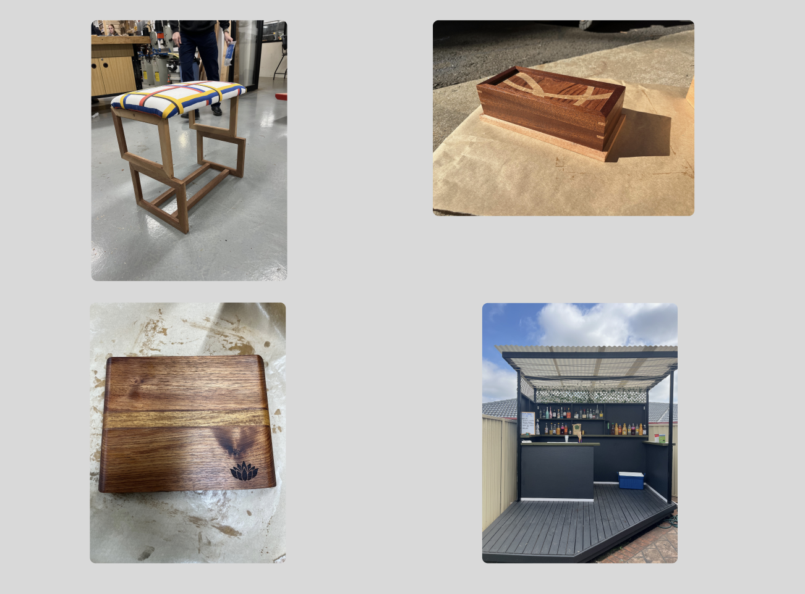
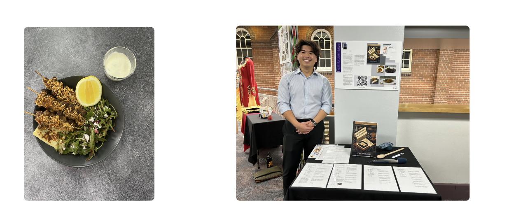

A visual account of projects created across the duration of my degree and other experiences.
Timber
Timber projects have been thoroughly enjoyable across the entire process. Some projects that I have developed and created are a Bauhaus-inspired Ottoman, Heirloom Box, and Chopping Board. A particular favourite passion project was the development and construction of my backyard bar, in collaboration with fellow peers in the same course. Utilised our collaboration and skills developed throughout this course, delivered a prized home staple.

Food Technology
Food Technology is my area of specialisation, and has allowed a different form of creativity to emerge, where it combines the love I have for food to solving real-life issues. Below are images of a dish I developed that was State Winner of the Flavour Forecast Challenge, a Dukkat-Crusted Lamb Skewer with Potato Flatbread, Potato Salad, and Yoghurt Sauce. And also is an image of my Food major work, the Homechefs Handbook, a guide for young adults for how to best cook at home. The package includes the guide, four recipes, and a start kit (spatual, measuring cups, tongs).

Hospitality
Food Technology is my area of specialisation, and has allowed a different form of creativity to emerge, where it combines the love I have for food to solving real-life issues. Below are images of a dish I developed that was State Winner of the Flavour Forecast Challenge, a Dukkat-Crusted Lamb Skewer with Potato Flatbread, Potato Salad, and Yoghurt Sauce. And also is an image of my Food major work, the Homechefs Handbook, a guide for young adults for how to best cook at home. The package includes the guide, four recipes, and a start kit (spatual, measuring cups, tongs).